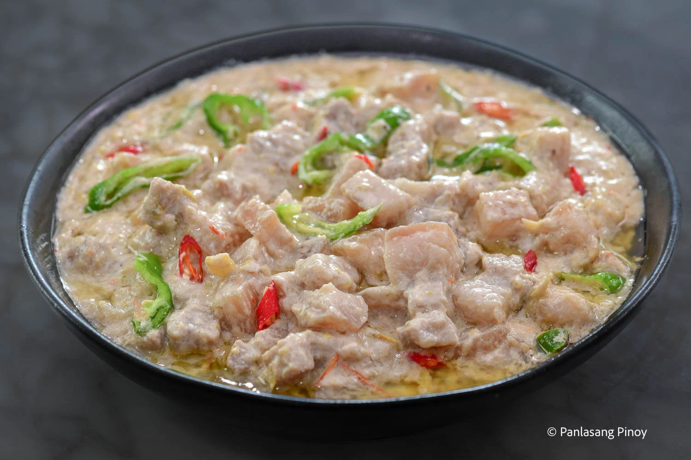

Bicol Express

Description
Bicol Express is sure to rock your tastebuds! It's rich, creamy, spicy, and delicious, with pork cubes cooked in coconut milk and chili peppers. Serve it with steamed rice for a hearty, big-flavored meal!
Ingredients
- Finger Chilies
- Onion
- Garlic
- Oil
- Thai Chili Peppers
- Coconut Cream
- Coconut Milk
- Pork Belly
- Salt
- Pepper
- Fresh Shrimp Paste
- Water
Steps
- Brown pork. Saute aromatics in oil in a wide pan over medium heat until softened. Add pork and cook until lightly browned. Add shrimp paste and cook for a few minutes.
- Add coconut milk and water. Coconut milk tends to curdle or separate when brought to a boil or heated too quickly. Cook in a gentle simmer to ensure a smooth, creamy sauce.
- Cook pork. Add chili peppers. Cover and simmer until the pork is tender and the liquid is reduced.
- Add finger chilies and coconut cream and continue to simmer until thickened and begins to render fat. Season with salt and pepper to taste.
Home